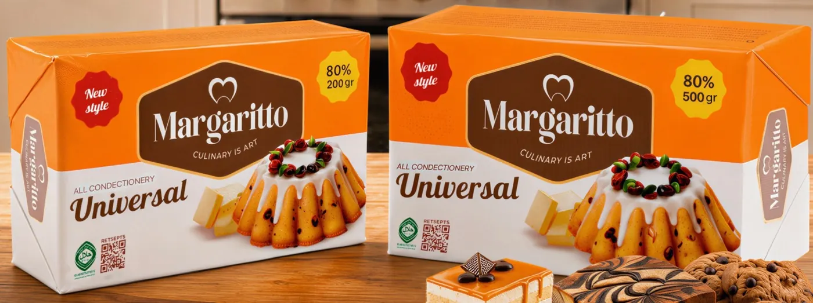

80%Chakana
Margaritto Universal
Turli qandolat mahsulotlari uchun mo'ljallangan, qaymoqli ta'mga ega. Un mahsulotlari, qumoq xamir, non va xamirturushli xamir uchun mos. Asosan uy bekalari pishiriqlar tayyorlashda foydalanadi.
- Turi
- Margarin
- Qadoq
- 200 g / 500 g, koshir brusok
- Qutida
- 200 g × 30 = 6 kg
500 g × 12 = 6 kg - Quti o'lchami
- 200 g: 8×20×35 sm
500 g: 13×21×25 sm
Non va bulochkalarQumoq xamir va keklarNapoleon va MedovikPechenye va somsa